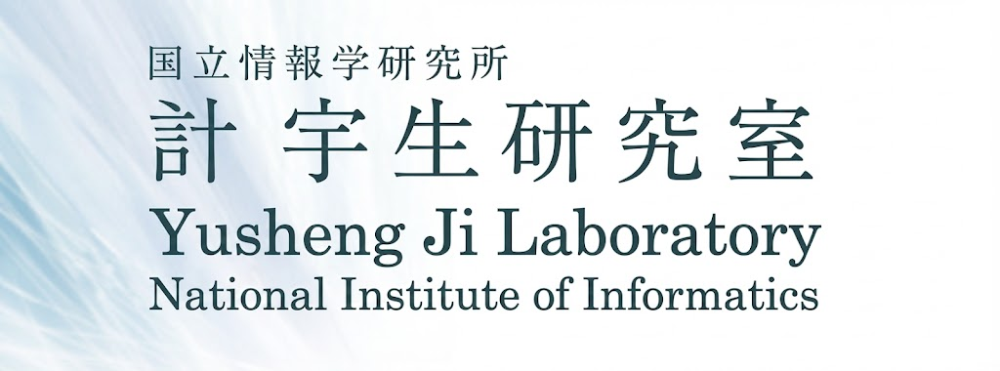
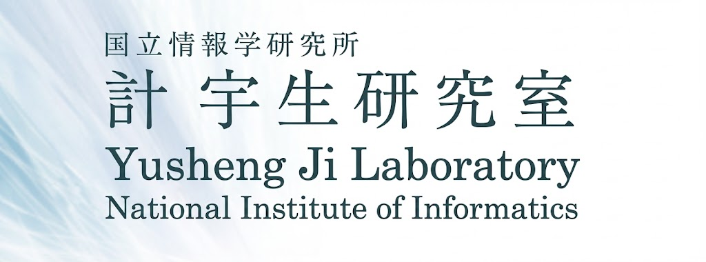

Xiangchun Chen
Ph.D. Candidate
Department of Computing (COMP)Faculty of Engineering
The Hong Kong Polytechnic University
Office: PQ 503, PQ Wing, PolyU, Hung Hom, Hong Kong.
Email:
xiang-chun.chen AT connect.polyu.hk
Google Scholar |
My Full CV
Short Bio
Xiangchun Chen is a PhD candidate in Department of Computing, The Hong Kong Polytechnic University , supervised by Prof. Cao Jiannong. Previously, he received the Bachelor Degree of Computer Science and Technology from Faculty of Computing, Harbin Institute of Technology in 2021.
His research interests lie in edge computing, reinforcement learning, digital twin, AI Agents and Large Language Models (LLMs). His current work focuses on building autonomous AI agents for complex scheduling and resource management.

Education Background
-
Ph.D.: Hong Kong Polytechnic University, Hong Kong, China. Aug. 2021 - Now
Supervisor: Prof. Cao Jiannong, IEEE Fellow.
-
Visiting PhD Student: National Institute of Informatics, Tokyo, Japan. Oct. 2024 - Mar. 2025
Supervisor: Prof. Ji Yusheng, IEEE Fellow.
-
B.E.: Harbin Institute of Technology, Harbin, China. Sep. 2017 - Jul. 2021
Publications
Selected Journal Publications
-
[TMC] Decentralized Task Offloading in Collaborative Edge Computing: A Digital Twin assisted Multi-agent Reinforcement Learning Approach,
Xiangchun Chen, Jiannong Cao, Rui Cao, Yuvraj Sahni, Mingjin Zhang, and Yusheng Ji.
in IEEE Transactions on Mobile Computing, 2025.
(CCF A, SCI I, JCR Q1).
-
[TMC] Mobility-aware Dependent Task Offloading in Edge Computing: A Digital Twin-assisted Reinforcement Learning Approach,
Xiangchun Chen, Jiannong Cao, Yuvraj Sahni, Mingjin Zhang, Zhixuan Liang, and Lei Yang.
in IEEE Transactions on Mobile Computing, 2024.
(CCF A, SCI I,JCR Q1).
-
[TCC] Dynamic Task Offloading in Edge Computing based on Dependency-aware Reinforcement Learning,
Xiangchun Chen, Jiannong Cao, Yuvraj Sahni, Shan Jiang, and Zhixuan Liang.
in IEEE Transactions on Cloud Computing, 2024.
(IEEE TCC Best Paper Award 2024, SCI II, JCR Q1).
Selected Conference Publications
-
[MASS] Digital Twin-assisted Reinforcement Learning for Dynamic Microservice Offloading in Edge Computing,
Xiangchun Chen, Jiannong Cao, Zhixuan Liang, Yuvraj Sahni, and Mingjin Zhang.
in IEEE 20th International Conference on Mobile Ad Hoc and Smart Systems (MASS '23), 2023.
(CCF-C).
Teaching Experience
-
Teaching Assistant, Metaverse Applications: Design And Case Studies, Spring 2024.
-
Teaching Assistant, Programming Fundamentals and Applications, Fall 2023.
-
Teaching Assistant, Computer Networking, Spring 2023.
-
Teaching Assistant, Programming Fundamentals and Applications, Fall 2022.
-
Teaching Assistant, Programming Fundamentals, Spring 2022.
- Teaching Assistant, Computer Programming, Fall 2021.
Academic Service
PC Member/Journal Reviewer
- Reviewer for IEEE Transactions on Mobile Computing (IEEE TMC)
- Reviewer for IEEE Transactions on Cognitive Communications and Networking (IEEE TCCN)
- Reviewer for IEEE Transactions on IEEE/ACM Transactions on Networking(IEEE TON)
- Reviewer for IEEE Internet of Things Journal (IEEE IOT-J)
Selected Honors
- IEEE TCC 2024 Best Paper Award.
Awarded by the lEEE ComputerSociety Publications Board, 2025. - Postgraduate Studentship, HKPolyU.
Awarded by Hong Kong Polytechnic University, 2021-2025. - Ren-Min Scholarship.
Awarded by Harbin Institute of Technology, 2019-2020.
Sponsors/Collaborators
I sincerely thank these sponsors/collaborators for providing great support for my research.
 

News
- [10/2025] Congratulations! Our paper, "Reliability-aware Task Offloading in Decentralized Edge Computing: A Digital Twin assisted Multi-agent Reinforcement Learning Approach.", has been accepted at IEEE Transactions on Mobile Computing！
- [08/2025] Congratulations! Our paper, "Dynamic Task Offloading in EdgeComputing Based on Dependency-AwareReinforcement Learning", has been selected as the Winner of the 2024 Best Paper Award, from lEEE Transactions on Cloud Computing by the lEEE ComputerSociety Publications Board！
- [11/2024] Congratulations! Our paper "Mobility-aware Dependent Task Offloading in Edge Computing: A Digital Twin-assisted Reinforcement Learning Approach" has been accepted at IEEE Transactions on Mobile Computing！